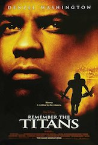
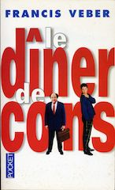
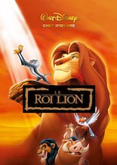

Je m'appelle Fred, j'ai 23 ans. J'effectue un Master Entrepreneuriat à l'IAE de Grenoble. Je fais Le Wagon pour ensuite travailler en tant que free lance.
See for yourself|  |
Le plus beau des combats (2000)En 1971, dans la petite ville d'Alexandria, Herman Boone, un noir, est nommé entraîneur principal de l'équipe des Titans. Il devient donc le supérieur de Bill Yoast, un blanc, un prédécesseur renommé. Malgré tout ce qui les oppose, Boone et Yoast apprennent à travailler ensemble. |
|  |
Le diner de cons (1998)Pierre, éditeur, participe chaque mercredi à un `dîner de cons'. Le principe : chacun amène un `con' et celui qui a déniché le plus spectaculaire est déclaré vainqueur. Ce soir, son invité est François Pignon. Passionné de modèles réduits en allumettes, ce dernier est également un véritable porteur de guigne. |
|  |
Le Roi Lion (1994)Le fils du roi des animaux vient de naître. Son oncle est jaloux car il aimerait lui aussi régner. Il invente une ruse qui aboutira sur la mort du roi. Le jeune fils, Simba, témoin de la mort de son père, et s'en croyant responsable, va fuir sa horde. |
This page has been coded during the FullStack program @LeWagon. That was probably the best experience of my entire life.